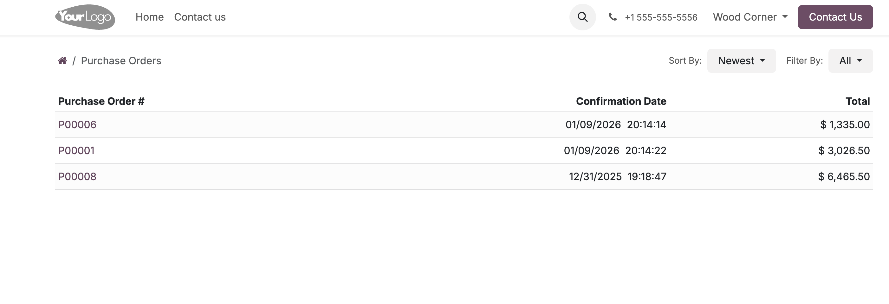
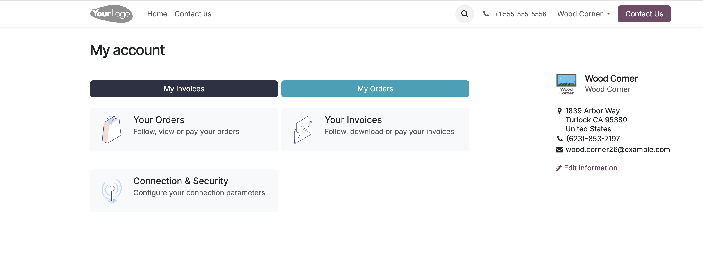
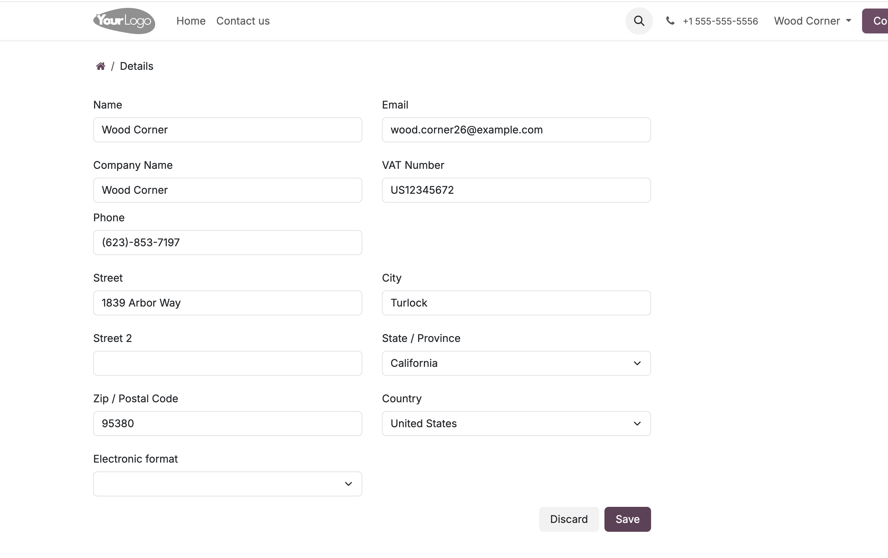
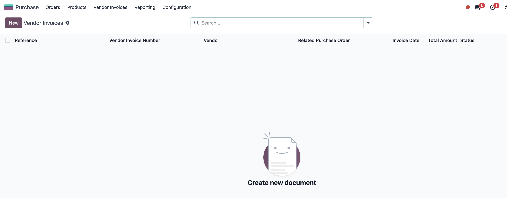

Customer & Vendor Portal Extension enhances the standard Odoo portal by adding practical, real-world features for customers and vendors. It allows vendors to view their Purchase Orders, upload invoices directly, and track invoice status — all without backend access.
Vendors can securely access their Purchase Orders through the portal, view order details, confirmation dates, totals, and download PDFs.
This eliminates email back-and-forth and ensures vendors always have up-to-date order information.
Vendors can upload invoices directly from the portal and link them to a specific Purchase Order.
Each invoice includes:
Vendors can track the status of their submitted invoices directly in the portal. This provides transparency and reduces follow-ups with the accounting team.
Invoice statuses are clearly displayed, such as:
Customers benefit from an improved portal experience where they can view invoices, due dates, amounts, and payment status in a clean, easy-to-read layout.
Customers and vendors can update their contact details, company information, VAT number, address, and communication preferences directly from the portal.
Uploaded vendor invoices are available to internal accounting users for review, validation, and processing.
This ensures full control for finance teams while keeping vendors outside the backend.
Perfect for small and medium businesses looking to improve vendor collaboration without complex customization.